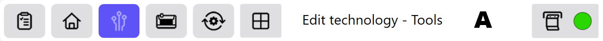
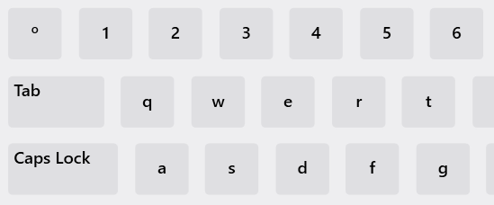
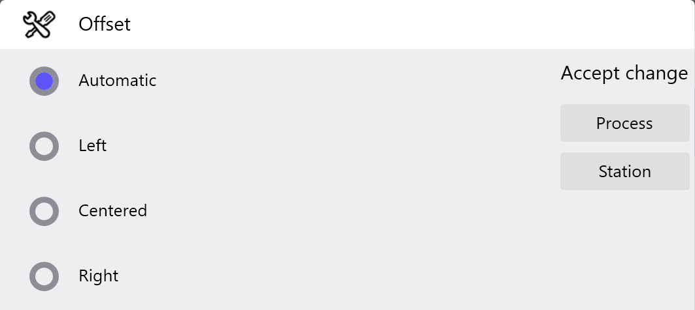

Todos los menús, diálogos y funciones están identificados con símbolos. Este concepto facilita el manejo intuitivo del programa y ofrece una interfaz clara del usuario.
Info: El tamaño de las visualizaciones se adapta dinámicamente a la interfaz al mostrar y ocultar diálogos. Así pueden mostrarse diálogos adicionales sin que tapen las vistas ya disponibles.
Todos los campos y módulos del programa se invocan a través de los símbolos en la línea de encabezamiento (See «Elementos en la línea de encabezamiento»).
Seleccionando el campo de texto (A) de la línea de encabezamiento se muestran puntos de menú adicionales. Dichos puntos de menú vuelven a ocultarse en el momento en que no se seleccione ningún botón.

Seleccionado la función Editar tecnología se muestra en el lado izquierdo de la pantalla la barra de menús con los botones de cada uno de los menús de tecnología.

La ventana de visualización contiene la vista principal y otras cajas de diálogo adicionales según la función seleccionada. Según el menú, en las cajas de diálogo se muestran el proceso de doblado así como las vistas de la secuencia de doblado y del plan de estación.
En la barra de funciones pueden ejecutarse acciones a través de los botones correspondientes o seleccionarse funciones para la respectiva vista. La barra de funciones queda oculta en el caso de que en la vista actual no haya funciones a seleccionar.

En la lista de mensajes se muestran todos los mensajes pendientes indicándose el estado correspondiente y la procedencia.
Estos diálogos se muestran automáticamente en la interfaz de derecha a izquierda. El diálogo de origen se oculta. Vuelve a ocultarse pulsando en la línea de encabezamiento del diálogo (A) y vuelve a mostrarse el diálogo precedente.

Se utilizan registros para una presentación clara de los diferentes campos del software. Los respectivos diálogos se muestran pulsando sobre el registro correspondiente. Cada registro está identificado con un símbolo determinado o con un texto (A).

Con este diálogo de teclado pueden introducirse en el campo valores libremente definidos. El diálogo aparece en el momento en que se seleccione un campo con valores de libre definición.

Con este diálogo pueden introducirse en el campo valores numéricos. El diálogo aparece en el momento en que se seleccione un campo con valores numéricos.

Con este diálogo pueden introducirse en el campo valores predeterminados. El diálogo aparece en el momento en que se seleccione un campo con valores predefinidos.
